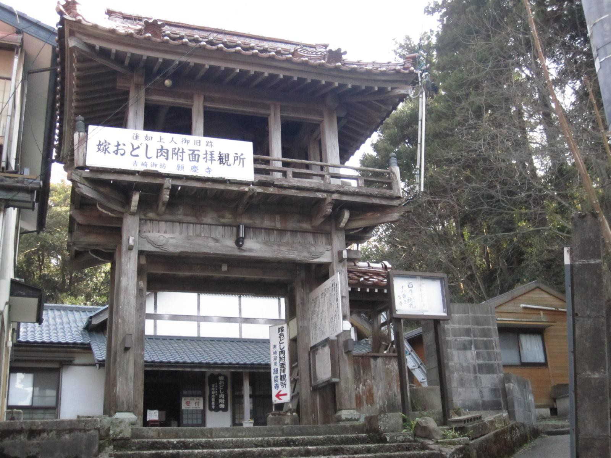

吉崎御坊 願慶寺
静寂、湖畔。550年の時を超えて響く念仏の心。
吉崎御坊の歴史
吉崎御坊は、文明3年（1471年）に浄土真宗の祖、蓮如上人が越前国吉崎に建立した寺院です。比叡山からの迫害をあからさまに逃れた蓮如上人が、この地を布教の拠点としたことで、北陸一帯に広大な信仰が広がりました。
吉崎は、北を北潟湖、南を日本海に挟まれた小高い山にあり、風光明媚な景色が広がる場所です。当時は多くの坊舎が建ち並び「坊中」と呼ばれるほどの壮大な寺院群を形成していました。
現在は国の史跡に指定され、蓮如上人の銅像や本堂跡が残されており、この地を訪れる人々に当時の熱い信仰と風情を伝えています。


嫁脅しの肉付きの面


「食まば食め 喰わば喰え金剛の 他力の信は よもや止むまじ」
吉崎御坊 願慶寺に伝わる「嫁威肉附面（よめおどしにくつきのめん）」の伝説。それは単なる恐ろしい話ではなく、真実の信心と阿弥陀如来の救済を伝える生々しい歴史の証です。
室町時代、蓮如上人が吉崎に御坊を建立された頃、ここに清（きよ）という信心深い嫁がおりました。彼女は夜な夜な吉崎へ通い、上人の説法を聞くことを何よりの喜びとしていました。
しかし、嫁の信心を快く思わぬ姑は、嫁を脅して参詣をやめさせようと企みます。家宝の鬼の面を被り、清が通る暗い谷間で待ち伏せ、猛然と飛び出したのです。しかし清はひるむことなく、この歌（上掲）を詠み、念仏を唱えて歩み続けました。
姑が家に戻り、面を外そうとすると、不思議なことに面は顔に吸い付き、剥がそうとすれば肉が裂け、血が流れる激痛に襲われました。自らの邪心に悶え苦しんだ姑は、清とともに蓮如上人の前で懺悔しました。上人の御前で一心に念仏を唱えると、面はポロリと外れましたが、その内側には姑の顔の肉が付着していたと伝えられています。
【 版木の造形美 】
- 恐ろしげな鬼の形相：執着と邪心を具現化したような凄まじい表情。
- 反転して彫られた文字：印刷用として鏡合わせに彫られた神秘的な筆致。
- 使い込まれた木肌：数世紀にわたり教えを広めてきた歴史の重み。
この「版木（はんぎ）」は、その驚くべき出来事と仏法を広く複製し、民衆へ伝えるための実用的な道具として、今日まで大切に守り抜かれてきました。
四季の情景と至宝

春の息吹
吉崎の丘を淡い桃色に染める八重桜。湖を渡る風に花びらが舞います。

北潟湖の夕映え
静寂な湖面を黄金に染める夕陽。アイリスブリッジが美しく浮かび上がります。

冬のしじま
全てを白く塗り替える雪。北国ならではの静謐な時間が流れます。

蓮如上人像
高村光雲作。湖を見下ろす高台に立ち、今も人々の幸せを願い続けています。
交流掲示板
アクセス
住所
〒922-0679 福井県あわら市吉崎1丁目302
電話番号
0776-75-1956
拝観時間
午前9時 〜 午後4時